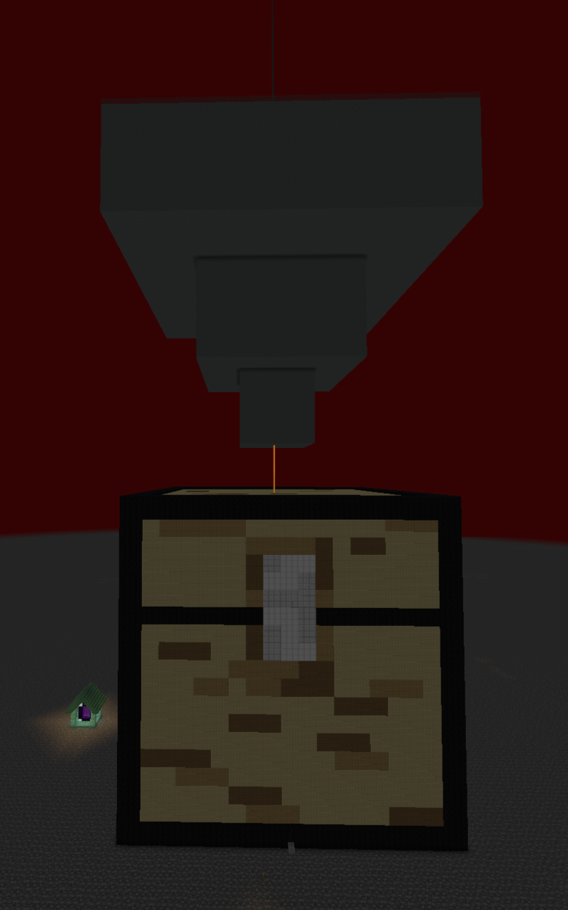

Minecraft
Overview
I've been playing Minecraft since I was just a kid. Playing minecraft,
exploring mods, and setting up servers helped to guide my way towards
studying computer science. Since around 2020 I've been playing the
same world with one of my best friends on and off. We mostly do
technical projects that involve a large-scale farming of items. (I.e.
automatic gold farm, bone farm, etc.)
The picture above is our gold farm and gold bartering farm, decorated
to appear as a hopper and chest respectively.
Current Project: Perimeter
Currently, my friend and I are creating a "perimeter" that is 17
chunks on a side. A perimeter in minecraft is an area completely
devoid of breakable brocks (i.e., everything but bedrock). A chunk is
16 blocks wide, the sea level of the game is at 63, and the lowest
block is at -64. Thus, assuming the blocks are filled completely from
the bottom of the world to the sea level, there are approximately 9.4
million blocks to remove. Thus, we've utilized mechanics such as
flying machines and tnt-duplicators in unison to automate much of this
work.
We do this so that we can have perfectly optimal conditions for mobs
(i.e. witches, pigs, zombies) to spawn and subsequently be harvested
for resources.
The image below shows our progress as of December 2025, having dug out
most of the trenches for the larger machine to traverse down.